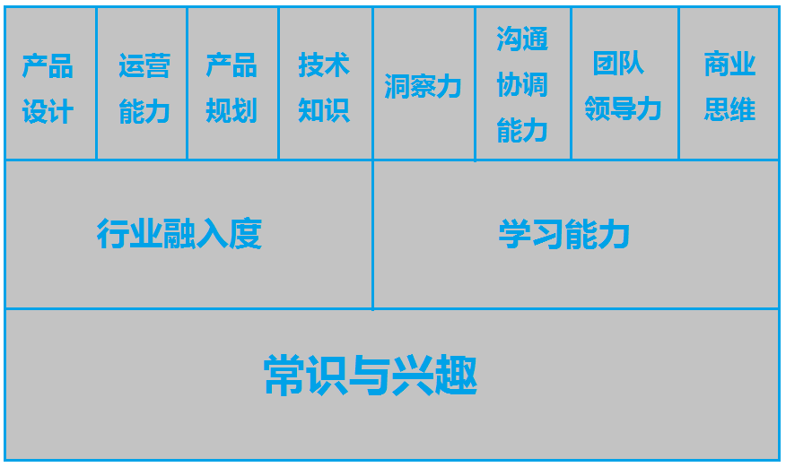

产品经理的能力模型
产品经理是一群游荡在互联网世界的神奇生物，是连接需求和技术的桥梁。这群人，既需要程序猿一般严谨缜密的逻辑思维能力，也需要艺术家创作时酣畅淋漓的创意挥洒，更需要时时刻刻保持孩童般的好奇心。好的产品经理，一定是能在繁重的工作中，始终保持对生活的乐趣，对生活的好奇，对生活的喜好，并能将这种愉悦感持续地影响团队，进而将产品的愉悦感传递给最终用户，将产品价值最大化。
从能力建设来看可以分为硬实力和软实力。硬实力可以通过持久的学习获得，软实力则很难培养。硬实力是“做事”的具体能力，比如公司业务理解、产品功能与交互设计、项目管理、方案评估、项目（模块）目标分析与拆解。软实力是“做人”的能力，比如对人的沟通表达，甚至影响他人、感染他人、发展他人，对于产品初阶，产品经理需要有对用户的敏感度，细腻的心思；对于高阶和CEO而言，更需要市场洞察、资源协同、突破性的创新力。而且越往上，对能力的要求越像思想家，需要确立产品的价值观。价值观引领产品观，产品经理有了价值观，才有产品观，价值观是产品的思想指导，产品观是具体地让用户更加容易地使用产品。价值观不稳，也很难有很好的产品观。
综合产品经理所需的硬实力和软实力，产品经理的能力模型大致可以用下图表述： 思维导图是一种将放射性思考具体化的方法。
必备层－常识和兴趣
是获取所有职业能力都需具备的最基础能力和素质。常识是作出最基本判断的前提，常识不坚实，逻辑推理能力再强也无法推理出牛逼的idea。而兴趣就是好奇心，天然驱使自己的动力。最可怕的莫过于对任何事都抱着已知和没有任何探索欲望的心态，这种性格是很难成为很好的产品经理的。
基础能力层－2个要求
1.行业融入度
自认为是一个人的“职业温度”，对自己行业的热爱。在互联网行业中，产品经理需要对新的产品，新的科技带来的生活方式的变化充满热爱和猎奇心。这里的“行业”对产品经理有两重含义：第一重：互联网行业；第二重：产品所属的行业。好的产品经理，必然也是自己行业产品的重度用户。那些对自己做的产品领域充满了挑战欲和成就感，对这个行业有融入度和认可度，并且能够做好，那么这样的产品经理在这个行业就是闪闪发光和价值千金的。你的合作伙伴和你的老板都能感觉到你的这种热爱和驱动力，根本不需要老板下指标做规划，自己就琢磨着规划实行了。而做一个自己不喜欢的行业，是很纠结的。这个是好的产品经理和好的研发最不一样的地方，不仅需要职业技能的累积，还需要真正对行业产品的融入，促使自己逐步提高，用极致的态度做极致的产品让用户爽。
2.学习能力
来源于总结，开放的心态，和有意识的训练，加学习的技巧。学习必然要经过三个阶段：自律，自信，自由。自律，学习在开始时都要通过自律的意志力坚持过枯燥乏味的开始；当过了这个阶段以后，就可以感受到其中的乐趣，同时在这个过程中建立兴趣，会正向循环到学习过程中去；当到了自由的阶段，那就是信手拈来了。
职业技能层－8个技能点
从左到右，从硬能力到软能力，能力要求从低到高，逐步困难。
1.产品设计能力
通过原型，流程图等等，依据用户使用场景，使用专业领域的知识、工具和技巧，设计出满足甚至超出用户预期的功能特性
2.运营能力
通俗说就是让用户获得价值感，将产品的价值传递给用户
3.产品规划
是一个产品经理较高层面上的能力，为产品作操盘的节奏，制定产品分阶段的目标。而具备这种能力的产品经理，通常会具备很多思想家的特质。从产品外部体系上，规划力代表了产品经理对整个价值市场的认同，对企业产品线的布局，对自身产品的定位以及对每一款产品的发展思路。当然，对于大部分产品经理而言，战略层面的东西可能还接触不到，特别是对于大型公司，决策层对于战略的考虑会大大多于产品经理，而产品经理在这样的情况下对于战略的执行多于对战略的思考。
4.技术知识
了解与产品相关的技术实现原理及其表现形式，能够就技术方案与技术人员有效沟通，具备技术实现的基本技术概念
5.洞察力
也可以说是市场分析能力，敏锐的机会地获得。对行业变化、竞品动态和用户习惯变化进行掌握和分析，确定产品的市场地位，掌握竞争格局，预测市场变化，确定战略战术。新机会、新产品或新项目的识别：能在较为模糊的情况下发现新商业机会，独立提出项目或方案；面对模糊的问题，分析现象，找到原因，挖掘问题，识别出关键点，找到解决方案，判断优先级，拿到结果。
6.沟通协调能力
nice，也要耐撕。技术作为支持方，产品经理作为资源协调方，一定要谨记祸从口出，语言要控制好。这里避不开谈谈情商。情商，我理解的是理性地处理感性的事情。技术化地撕逼，技术化地处理情绪。还需要一定的厚脸皮，撕完以后不管当时多僵，新的一天又要重新接待支持方。既能坚持主张地耐撕，也能适时地放下手段，把酒言欢，用Under Table的方式维系团队关系
7.团队领导能力
团队领导能力也是可以培养的，需要慢慢树立出来，靠谱的人的映像也会慢慢积累影响力和领导力，靠谱到一定程度就会拥有领导力
8.商业思维
行业机会，商业化的变革，对消费市场的感觉
下一篇将会继续介绍产品经理的产品思维。